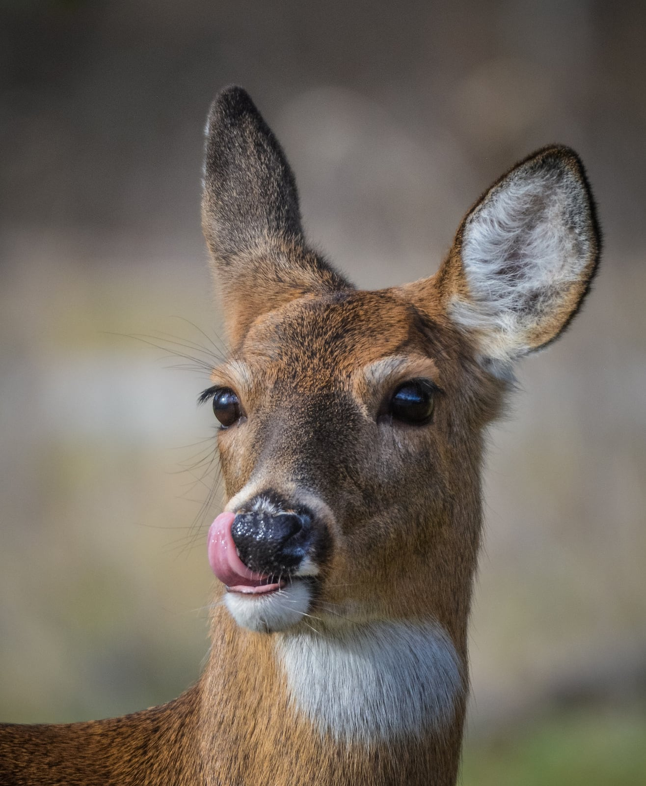

a especie humana ha practicado la caza desde la prehistoria, era la primera y principal ocupación de los hombres. Se considera que los primeros grupos humanos utilizaron un sistema de caza, pesca y recolección el cual fue muy eficiente para garantizar el poblamiento del planeta. Y aún hoy sigue siendo parte de la forma de sustento de muchos grupos humanos. El humano comenzó a cazar para subsistir, y así sigue siendo actualmente en muchas partes del mundo. La caza de subsistencia es aquella actividad que se realiza con la finalidad de obtener proteína animal o subproductos de caza para satisfacer las necesidades propias de los grupos humanos ligados a zonas rurales donde la disponibilidad de especies cinegéticas es alta.
El ejercicio de la caza se refleja en textos religiosos y mitológicos. Por ejemplo, la Biblia dice que Nemrod nieto de Noé era cazador. Ismael, hijo de Abraham y de Agar, se distinguió en este ejercicio. Esaú vendió su herencia a Jacob por un plato de lentejas al llegar hambriento de la caza. David fue cazador, etc.
La mitología griega representa a Artemisa como la divinidad de los cazadores. Quirón, que cuidó de la instrucción de la mayor parte de los héroes de la antigüedad, fue instruido por Artemisa en el arte de la montería. La misma atribuye a Pólux la gloria de haber enseñado o adiestrado los perros en la caza; y Cástor introdujo los caballos en la caza de los ciervos.
Hombre cazando con su mejor amigo el perro

venados
Mejores animales para cazar
venado
Elefantes
Aves
Rinocerontes
Leones
Tigre
Reptiles
Serpientes
Ardillas
Ratas
Estas son solo algunas cosas y animales para comenzar a cazar
videos
Historia de la cazaExplicacion de la caza
Investigacion
Venados
El venado de páramo (Mazama rufina) se caracteriza por tener una coloración café-rojiza intensa, poseer unos cuernos cortos, un peso aproximado entre los 8 y 13 kg y una longitud menor de 1 m.
Esta especie se encuentra categorizada por la UICN como Vulnerable (VU), y no se encuentra catalogada a nivel nacional o en el CITES.
Se distribuye a lo largo de los bosques altoandinos y de niebla de los Andes, en el noroeste de Suramérica, desde la región noreste de Colombia, en la Cordillera Central, hasta el sur de los Andes en Ecuador y el extremo norte de Perú (Eisenberg, 1989; Tirira, 2001).
En general M. rufina es una especie de hábitos solitarios cuya preferencia de hábitat son los bosques húmedos (Eisenberg 1989), con gran cobertura vegetal para su protección y fácil movilidad.
Su hábitat natural son los bosques húmedos tropicales, bosques altoandinos y las zonas de páramo, con una preferencia por los sitios montañosos (Cabrera & Yepes, 1969; Eisenberg, 1989; Emmons & Feer, 1990);
Otros ecosistemas ampliamente usados por estas especies son las sabanas, puntualmente zonas de bosque ripario, con cobertura vegetal que propicie su protección y refugio (Ojeda, 1991).
Amenazas
Desde los orígenes del hombre, una gran variedad de animales han sido parte clave de su cosmogonía, mitología y cultura; los cérvidos han sido uno de los grupos más ligados al hombre (Serra y Valdez, 1989), visto claramente en las pinturas rupestres que datan hace miles de años.
Los venados han tenido una gran importancia histórica en la economía de los pueblos indígenas y campesinos, a causa del consumo de su carne y el uso de sus pieles; en la actualidad en nuestro país estos son objeto de caza furtiva y de subsistencia.
El venado tiene una enorme importancia ecológica, como mencionado previamente, pero esta importancia también lo ha sido en aspectos económico, alimenticio y de supervivencia en el caso de los pueblos indígenas.
Cazadores indigenas
De manera inicial, mujeres y hombres llegan a México en una fase muy avanzada de su evolución como homo sapiens. En segundo lugar, estaban organizados en comunidades de cazadores-recolectoras que no conocían la agricultura. Estos grupos se movían frecuentemente de lugar, según fuentes de abastecimiento y ciclos naturales. Las comunidades eran muy pequeñas y estaban integradas con base en unidades reproductivas (familiares). Hacían uso de utensilios diversos que servían para una gama de actividades productivas, de transporte y consumo. En tercer lugar, a lo largo de milenios la tecnología evolucionó, particularmente en lo referente a la domesticación de plantas, fabricación de herramientas y construcción de viviendas. El autor concluye que, como se requería baja densidad poblacional, existían factores, conscientes y no, que limitaban el crecimiento de la población. Por último, este tipo de vida se sostiene aun después del desarrollo de civilizaciones mesoamericanas. A pesar de su nomadismo, se crean formas de organización social y política relativamente avanzadas.
A pesar de que en algunos casos el estudio de la economía de aquellos milenios se basa en evidencias del presente, un aspecto que destaca del segundo capítulo es la atención que el autor pone a aspectos como la participación e importancia de la mujer en la supervivencia de los grupos nómadas, toda vez que -como queda bien claro por el peculiar título del capítulo- aquellas comunidades se alimentaban más de la recolección que de la caza. Llama la atención también el recurso de una serie de nuevos descubrimientos sobre el relativamente elevado nivel de vida de los grupos nómadas, lo que contradice la leyenda negra que sobre ellos desató el pensamiento europeo de nuestros siglos pasados.
De igual modo interesante es la caracterización que Enrique Semo hace de la visión que tienen los grupos nómadas respecto al territorio, sus fuentes de subsistencia, la naturaleza y en general el mundo material que los rodea. En este segundo capítulo Semo presenta las evidencias de los antropólogos, etnógrafos, etnólogos, etc., para luego pasar a los testimonios de la arqueología. Esto permite concluir que para el periodo estudiado la interdisciplinariedad es fundamental, A nosotros los historiadores de los periodos moderno y contemporáneo nos queda mucho por aprender de quienes estudian el mundo antiguo.
Historia de la Pesca
Empezó durante la prehistoria en los océanos europeos, convirtiéndose en un auténtico descubrimiento de supervivencia. Los hombres se organizaban en distintos grupos y buscaban lugares no muy profundos para capturar peces con las manos, y otras especies como cangrejos. Más tarde empezaron a utilizar objetos de caza como lanzas, arcos y flechas, y para subsistir y mejorar la técnica de la pesca se inventó el anzuelo, que fabricaban de huesos, madera y cuernos.
Con el paso de los siglos, la pesca pasó a ser un negocio comercial. Tal es así, que a la sal se le impuso un importante impuesto, ya que era necesaria para la conservación de la carne y el pescado.
En la Antigua Roma, la pesca pasó a ser considerada como un deporte, siendo el anzuelo el utensilio que marcaba el tipo de pesca. Fue en el siglo I de la era moderna donde, en tierras niponas, una emperatriz japonesa fabricó el primer anzuelo hecho con una aguja, granos de arroz como cebo e hilo de sus ropas como sedal.
A lo largo de la historia se han fabricado más de 4000 tipos diferentes de anzuelos, unos para la pesca de deporte, otros como forma de conseguir sustento, y otros diseñados para la pesca comercial.
Actualmente, la pesca es sin duda una actividad del sector primario, que ha ido evolucionando a lo largo de los años, con una gran importancia económica. Nos proporciona ese alimento básico de nuestra dieta que es una enorme fuente de proteínas.
Cazeria en españa
El balance anual de la afición a la caza en España es de 30 millones de animales muertos. Aunque el número de licencias de caza se ha reducido en un 61% en los últimos 25 años, siguen saliendo a cazar en nuestro país 850,000 licenciados, que, junto a aquellos furtivos y sin licencia, fácilmente doblan esta cifra.
Anualmente se da permiso para cazar 4.4 millones de conejos, 1.4 millones de liebres, 5 millones de perdices, 90,000 ciervos y 3,664 rebecos entre otros. Gran parte del territorio nacional es coto de caza. El 95% del territorio catalán, por ejemplo, es clasificado como tal.
Algunas administraciones otorgan a la promoción de esta actividad generosas subvenciones con dinero público.
¿CONSERVACIÓN?
La caza ha roto el equilibrio ecológico de nuestra fauna autóctona y nuestros ecosistemas eliminando especies depredadoras e introduciendo híbridos. 270 especies de vertebrados se han extinguido por en mundo a causa de esta actividad.
Los 300 millones de cartuchos que se disparan cada temporada dejan en el campo 5.000 toneladas de plomo. Junto a este plomo, quedan esparcidos en campos, montes y riberas, cantidades de latas, bolsas de plástico y papel de aluminio dejando en entredicho el manido argumento ecologista de los cazadores.
El plomo, metal pesado altamente contaminante, provoca un grave impacto medioambiental y provoca la muerte a decenas de miles de aves acuáticas.
El colectivo de los cazadores tiene como principal argumento el mejorar el equilibrio de las especies. Sin embargo tienen que repoblar el campo de animales que han sido criados de manera intensiva en granjas para luego poder matarlos.
En España existe la granja de cría de perdices más grande del mundo de las que se crían anualmente 5 millones de ejemplares en el estado español. Ésta y muchas más, algunas mantenidas por los gobiernos autonómicos -como la de Torreferrusa en Cataluña, reintroducen ejemplares semi-domesticados en los bosques que sirven de objetivo fácil a los aficionados. Los cazadores también han mezclado jabalíes salvajes con cerdos domésticos para que éstos sean más prolíferos y menos esquivos de los humanos ofreciendo a los cazadores más argumentos (la superpoblación) y facilidades para su caza.